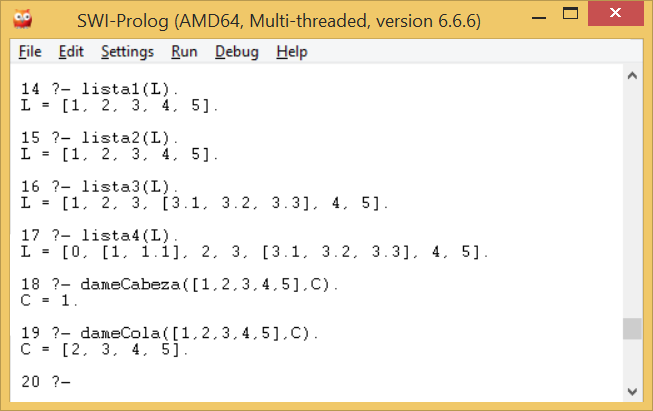

TAREA 3
TAREA 3
PROLOG
SIMBOLOS Y SINTAXIS
El sistema Prolog reconoce el tipo de un objeto en el programa por medio de su forma sintáctica. Esto es posible porque la sintaxis de Prolog especifica diferentes formas para cada tipo de datos. La forma de distinguir entre átomos y variables es que las variables empiezan con letras mayúsculas, mientras que los átomos con minúsculas. No existe información adicional para comunicarle a Prolog el orden para reconocer el tipo de un objeto.
Los átomos pueden construirse de 3 formas:
- Cadenas de letras, dígitos y el caracter '_', empezando con una letra minúscula
ana
pedro
x25
x_25
procedmiento_uno
categoria_x
- Cadenas de caracteres especiales
<---->
=====>
....
- Cadenas de caracteres encerradas en apóstrofes. Esto se utiliza cuando se quiere, por ejemplo, tener un átomo que empiece con una letra mayúscula.
'Tom'
'Polo_Norte'
Nota: en algunos compiladores, en vez de utilizar apóstrofes se utilizan comillas " " como en el caso de Prolog.
NUMEROS
Los números usados en Prolog incluyen números enteros y números reales. La sintaxis de los enteros es simple:
1
1313
0
El tratamiento de números reales depende de la implementación de Prolog. Asumiendo una sintaxis simple:
-0.0035
100.2
Los números reales no son muy utilizados en programas de Prolog. La razón de esto es que Prolog es principalmente utilizado como un lenguaje simbólico, no de computación numérica. En la computación simbólica, los enteros son utilizados, por ejemplo, para contar el número de elementos en una lista; por lo que los números reales son poco utilizados.
VARIABLES
Las variables son cadenas de letras, dígitos y el signo '_'. Estas empiezan con una letra mayúscula o el símbolo '_':
X
Objeto2
_23
Resultado
_x23
Lista_Participantes
Cuando una variable aparece en una cláusula sola, no se necesita inventar un nombre para ella. Se usa llamarla variable "anónima", cuando es escrito únicamente el signo '_'. Por ejemplo, consideremos la siguiente regla:
hijo(X) :- padre (X,Y).
La regla dice: para toda X, X tiene un hijo si X es el padre de alguna Y. Nosotros estamos definiendo la propiedad hijo el cual, no depende del nombre del hijo. Entonces, aquí hay un lugar en donde podemos usar una variable anónima. Si rescribimos la cláusula:
hijo(X) :- padre(X,_).
DETALLES
Como editor de texto resulta altamente recomendable el uso de Emacs. A continuación indicamos algunos links donde puede descargarse entornos de desarrollo:
Entorno de desarrollo
Prolog es un lenguaje de programación seminterpretado. Su funcionamiento es muy similar a Java. El código fuente se compila a un código de byte el cual se interpreta en una máquina virtual denominada Warren Abstract Machine (comúnmente denominada WAM).
Generalmente, los entornos de desarrollo ofrecen extensiones al lenguaje como pueden ser la programación con restricciones, concurrente, orientada a objetos, etc.
Sería injusto no mencionar aquí el entorno de desarrollo más popular: SICStus Prolog, si bien, se trata de un entorno de desarrollo comercial (no gratuito).
PARADIGMA
Logicos y Declarativos
PROGRAMA
CANCION ESTUPIDA
cancionestupida(0):-nl,write('Gomo ya no gueda shevvezza, -hic- be boy a doddmig...').
cancionestupida(N):-N>1,nl,write(N),write(' botellas de cerveza en el suelo'),nl,
write(N),write(' botellas de cerveza'),nl,
write('Cojo una y me la bebo'),nl,
A is N-1, cancionestupida(A).
cancionestupida(N):-N=1,nl,write(N),write(' bodellia de shegvezza en el zsduelo'),nl,
write(N),write(' bodella de segbezha'),nl,
write('La gojo y be la bhebo'),nl,
A is N-1, cancionestupida(A).